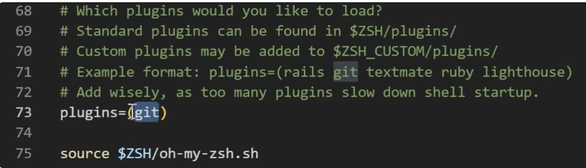

Personnalisation du terminal 💻
"La documentation est une lettre d'amour que vous écrivez à votre futur vous-même." ― Damian Conway
Le terminal représente une interface de commande textuelle permettant d'interagir directement avec votre système d'exploitation via des commandes écrites. Au lieu d'utiliser une interface graphique avec souris et icônes, vous saisissez des instructions textuelles spécifiques.
Cette approche offre plusieurs avantages : une exécution plus rapide des tâches, l'accès à des fonctions système avancées, et la possibilité d'automatiser des opérations récurrentes.
📚 Vocabulaire
- Terminal : Le programme qui affiche l’interface de commande
- Ligne de commande : L’espace texte où s’écrivent les instructions
- Shell : Le programme qui traite et exécute les commandes saisies
À propos du Shell#
Le Shell constitue l'interpréteur de commandes - c'est lui qui comprend et exécute vos instructions. Parmi les shells les plus utilisés :
- Bash : Standard sur la majorité des distributions Linux
- Zsh : Version enrichie de Bash offrant des fonctionnalités supplémentaires
Installation de ZSH#
Cette section vous guide dans le passage de Bash (le shell standard) à ZSH (Z Shell), une alternative moderne offrant une meilleure expérience utilisateur.
L'adoption de ZSH enrichira significativement votre environnement de travail avec :
- Une complétion automatique plus intelligente
- Une navigation facilitée dans l'historique et les répertoires
- Des options de personnalisation étendues
- Des outils intégrés pour optimiser votre productivité quotidienne
Guides d'installation#
- macOS : Consultez le guide détaillé sur https://sourabhbajaj.com/mac-setup/iTerm/zsh.html
- Windows avec WSL2 : Suivez les instructions sur https://blog.joaograssi.com/windows-subsystem-for-linux-with-oh-my-zsh-conemu/
💡 Compatibilité
ZSH reste totalement compatible avec vos commandes Bash existantes !
Installation de Oh My Zsh#
Oh My Zsh représente un framework qui enrichit considérablement ZSH en proposant :
- Une personnalisation visuelle via différents thèmes
- Un écosystème de plugins pour Git, Docker et autres outils
- Une collection d'alias préconfigurés pour accélérer les tâches courantes
- Des fonctionnalités d'autocomplétion avancées
Guides d'installation#
- macOS/Windows WSL2 : Rendez-vous sur https://ohmyz.sh/
⚠️ ZSH nécessite WSL pour fonctionner sur Windows
ZSH (Z Shell) est un shell Unix/Linux qui ne peut pas être installé nativement sur Windows. Pour utiliser ZSH sur un système Windows, vous devez impérativement :
- Si vous n'avez pas encore configuré WSL, reportez‑vous à la section précédente sur l'installation de WSL.
- Alternative : utilisez PowerShell + Oh My Posh pour une expérience terminal améliorée.
Personnalisation visuelle du terminal#
Cette étape vous permettra de modifier l'aspect visuel de votre terminal en configurant les thèmes ZSH.
Le fichier .zshrc constitue le cœur de la configuration de votre environnement ZSH -
c'est votre fichier de préférences personnelles pour le terminal.
Architecture de la configuration#
.zshrc→ Fichier de configuration principal de ZSH- Oh My Zsh → S'appuie sur ce fichier pour ajouter ses fonctionnalités avancées
🔧 Comment ça fonctionne ?
Lors de chaque ouverture d'un nouveau terminal, ZSH charge automatiquement le contenu du
fichier .zshrc et applique toutes vos configurations. Il agit comme un script
d'initialisation qui met en place votre environnement personnalisé.
Édition de la configuration#
Avec VS Code, ZSH et Oh My Zsh maintenant installés, vous pouvez éditer votre configuration en exécutant :
code ~/.zshrc
Cette commande démontre l'interaction fluide entre terminal et interface graphique : vous utilisez la ligne de commande pour naviguer, puis VS Code pour modifier confortablement le fichier.
Le fichier .zshrc peut paraître intimidant avec ses nombreuses lignes commentées,
mais son organisation reste accessible. La variable ZSH_THEME contrôle l'apparence
visuelle - le thème "robbyrussell" étant sélectionné par défaut.
Changement de thème#
Pour enrichir l'apparence de votre terminal, modifiez la ligne :
ZSH_THEME="robbyrussell"
par
ZSH_THEME="bira"
Après avoir enregistré le fichier (Ctrl+S), actualisez votre configuration en
saisissant zsh dans le terminal, ou ouvrez simplement une nouvelle fenêtre pour
appliquer le nouveau thème.
🎨 Plus de thèmes
Consultez la galerie de thèmes Oh My ZSH pour découvrir d'autres options visuelles qui pourraient correspondre à vos préférences.
Installation des plugins#
Maintenant que nous avons changé le visuel du terminal, nous allons aller plus loin en personnalisant les fonctionnalités du terminal. Et la façon dont nous allons procéder, c'est en découvrant comment activer et désactiver les plugins Z Shell.
En plus des thèmes, Oh My ZSH offre une multitude de plugins qui améliorent considérablement votre
productivité dans le terminal. Pour enrichir votre environnement de développement Python, ajoutez
ces plugins à votre fichie ~/.zshrc :
Pour ouvrir le fichier de configuration principal de ZSH, utilisez la commande dans votre terminal:
code ~/.zshrc
Pour consulter la liste complète des plugins disponibles avec Oh My Zsh :
code ls ~/.oh-my-zsh/plugins
Configuration des plugins
-
Localisez la ligne
pluginsdans le fichier.zshrc. -
Le plugin git est déjà activé par défaut. Il transforme votre prompt en affichant
:
- La branche Git active (image ci-dessous)
- Des indicateurs colorés de l'état du dépôt (fichiers modifiés, commits en attente, etc.)
- L'autocomplétion pour les branches et fichiers 
- Ajoutons maintenant le plugin python, spécialement conçu pour le développement Python. Il fournit des raccourcis intelligents pour vos commandes Python favorites. Modifiez la ligne plugins comme suit :
- Enregistrez le fichier (Ctrl+S) et redémarrez votre terminal (ou exécutez source ~/.zshrc) pour activer vos nouveaux plugins.
code plugins=(git python)
Installation des plugins externes
Au-delà des plugins standards, Oh My Zsh peut être enrichi avec des extensions externes particulièrement performantes qui améliorent la productivité en ligne de commande.
zsh-autosuggestions
Ce plugin suggère automatiquement des commandes basées sur votre historique de saisie, vous permettant de compléter rapidement des commandes.
git clone https://github.com/zsh-users/zsh-autosuggestions ${ZSH_CUSTOM:-~/.oh-my-zsh/custom}/plugins/zsh-autosuggestions
zsh-syntax-highlighting
Ce plugin applique une coloration syntaxique dynamique à vos commandes au fur et à mesure de la frappe, permettant de repérer visuellement les erreurs avant de valider avec Entrée.
git clone https://github.com/zsh-users/zsh-syntax-highlighting.git ${ZSH_CUSTOM:-~/.oh-my-zsh/custom}/plugins/zsh-syntax-highlighting
Configuration
Après avoir installé ces plugins, activez-les dans votre configuration :
- Ouvrez votre fichier de configuration :
code ~/.zshrc
- Localisez la ligne
plugins=() - Ajoutez les nouveaux plugins à la liste :
plugins=(git python zsh-autosuggestions zsh-syntax-highlighting)
Note : L'ordre des plugins est important. zsh-syntax-highlighting
doit être en dernier pour fonctionner correctement.
Appliquer les changements
Enregistrez le fichier (Ctrl+S) et rechargez votre configuration :
source ~/.zshrc